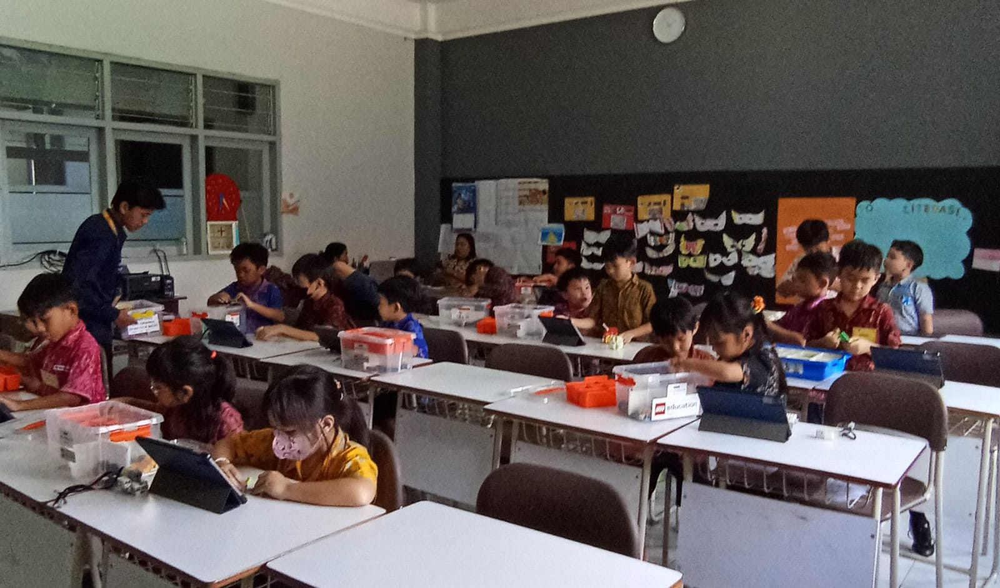
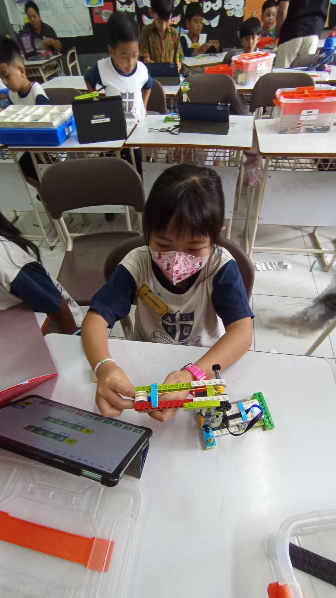
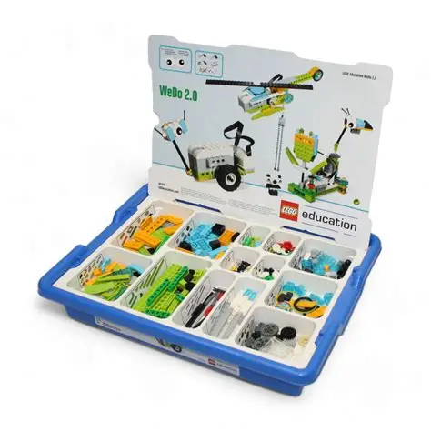
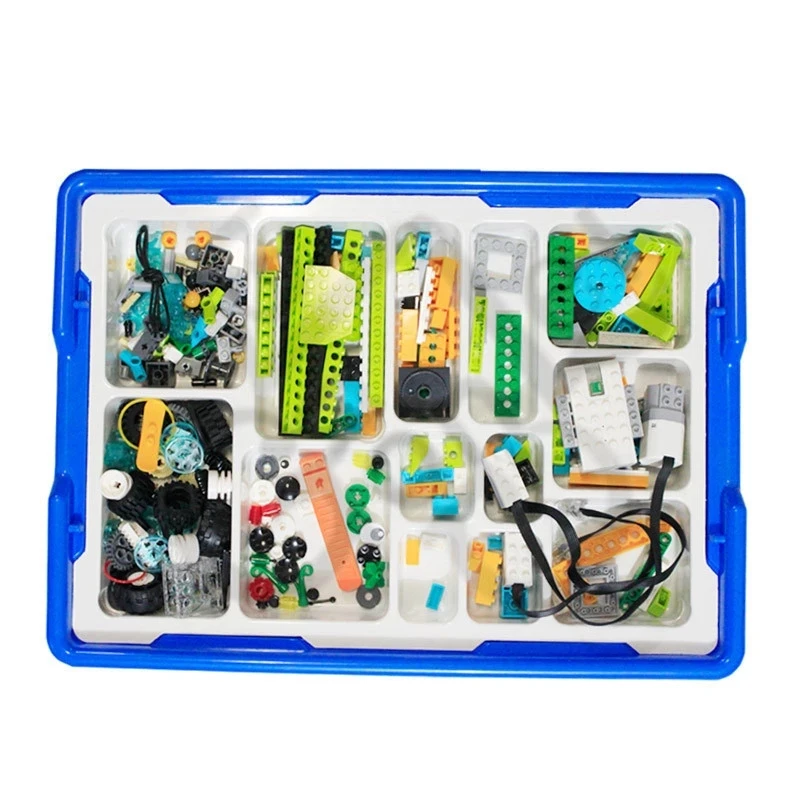
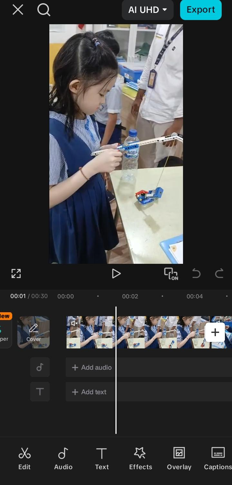

Kegiatan Yang Saya Kerjakan Di
Koding Akademi
1. Assistant Teacher
Sebagai Assistant Teacher, saya bertugas mendampingi instruktur utama dalam proses pembelajaran di kelas. Tugas ini mencakup membantu menjelaskan materi kepada siswa yang mengalami kesulitan, memastikan setiap siswa dapat mengikuti alur pembelajaran, serta membantu mengelola kondisi kelas agar tetap kondusif dan interaktif.


2. Merapihkan Lego WeDo dan Mekanik
Salah satu tanggung jawab penting selama PKL adalah merapihkan dan mengelola perangkat pembelajaran robotika, khususnya kit Lego WeDo dan komponen mekanik lainnya. Kegiatan ini meliputi menyortir, membersihkan, dan menata kembali setiap komponen ke dalam wadah yang sesuai setelah sesi kelas selesai.


3. Mengedit Video Dokumentasi di CapCut
Selain kegiatan teknis di kelas, saya juga ditugaskan untuk mengedit video dokumentasi kegiatan menggunakan aplikasi CapCut. Proses editing meliputi pemotongan klip, penambahan transisi, penyesuaian audio, pemberian teks dan caption, hingga finalisasi video yang siap dipublikasikan ke media sosial.
